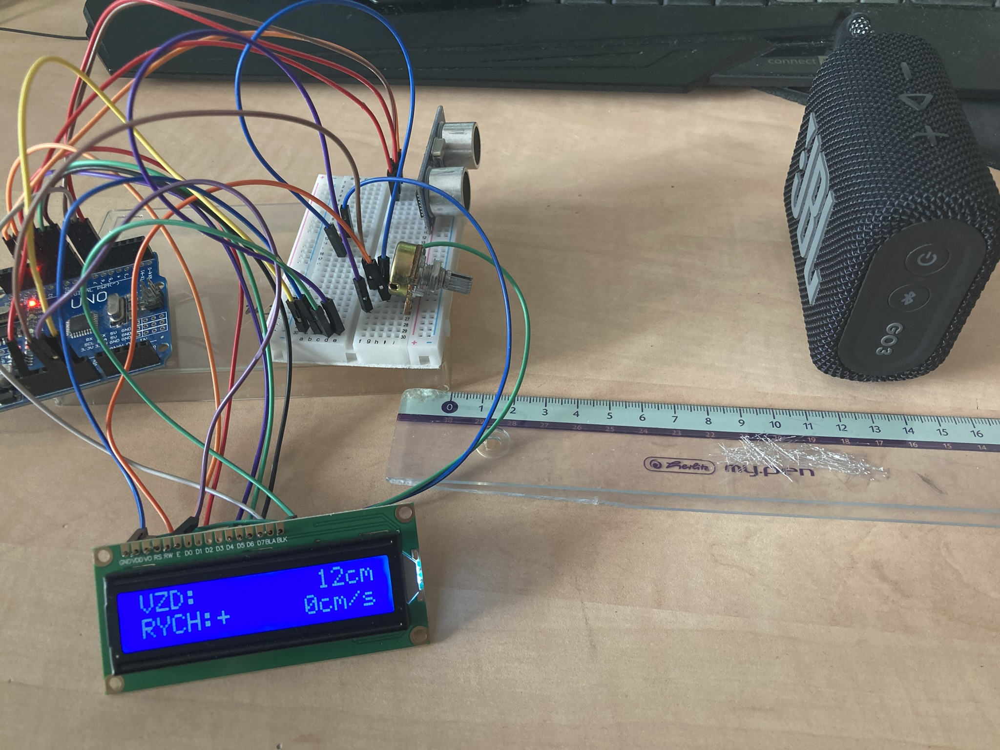

Jako elektro micro projekt jsem si dal za úkol sestrojit měřič vzdálenosti a rychlosti přiblížení a naměřené hodnoty zobrazit na display. Použil jsem ultrazvukový senzor HC-SR04, základní desku, display LCD 1602, 220 Ω odpor a potenciometr.
- Měří v reálném čase
- Zobrazuje na display
- Přehledné uspořádání
Technologie: Arduino, Tinkercad
Zde je obrázek zapojení v Tinkercadu.
Tady je více zmatené zapojení na reálných součástkách.
 Za zmínku by stálo říct to, že při zobrazování na display se hodnoty vypisovaly hned za dvojtečku a když se hodnota zvětšila o řád, celý zápis se musel posunout, a tak bylo extrémně těžké číst hodnoty při rychlé obnovovací frekvenci. Naopak při dlouhém času zápisu mezi hodnotami jsme nedostávali maximální efekt měření. Odsadil jsem tedy text na konec řádku a znaménko u rychlosti jsem nechal za dvojtečkou, aby nemuselo měnit svoji pozici. Rychlost je zde počítána jako podíl rozdílu vzdáleností a delty času.
Zde přikládám kód:
#include <LiquidCrystal.h>
// připojení LCD: RS, E, D4, D5, D6, D7
LiquidCrystal lcd(12, 11, 10, 9, 8, 6);
const int trigPin = 5;
const int echoPin = 7;
// proměnné pro výpočet
long duration;
float distance; // aktuální vzdálenost v cm
float prevDistance = 0;
float speed = 0; // rychlost v cm/s
unsigned long prevTime = 0;
void setup() {
Serial.begin(9600);
pinMode(trigPin, OUTPUT);
pinMode(echoPin, INPUT);
lcd.begin(16, 2);
lcd.print("Inicializace...");
delay(800);
lcd.clear();
prevTime = millis();
}
void loop() {
// měření vzdálenosti
digitalWrite(trigPin, LOW);
delayMicroseconds(2);
digitalWrite(trigPin, HIGH);
delayMicroseconds(10);
digitalWrite(trigPin, LOW);
duration = pulseIn(echoPin, HIGH, 25000); // timeout 25ms ~ 4m
if (duration > 0) {
distance = duration * 0.0343f / 2.0f;
} else {
distance = prevDistance; // při timeoutu držíme předchozí hodnotu
}
// výpočet rychlosti
unsigned long currentTime = millis();
float deltaTime = (currentTime - prevTime) / 1000.0f;
if (deltaTime > 0.0001f) {
speed = (prevDistance - distance) / deltaTime; // kladná = přibližuje se
} else {
speed = 0.0f;
}
// --- příprava formátovaných polí ---
char bufDist[10]; // 9 + '\0'
dtostrf((int)distance, 9, 0, bufDist); // vzdálenost jako celé číslo
char bufAbs[7]; // 6 znaků pro absolutní hodnotu
dtostrf((int)fabs(speed), 6, 0, bufAbs); // rychlost jako celé číslo
char bufNum[8]; // 7 znaků pro číslo + znaménko
for (int i = 0; i < 7; ++i) bufNum[i] = ' ';
bufNum[7] = '\0';
int lenNum = strlen(bufAbs);
int startPos = 6 - lenNum; // pozice čísla
if (startPos < 1) startPos = 1;
for (int i = 0; i < lenNum; ++i) bufNum[startPos + i] = bufAbs[i];
char sign = (speed >= 0.0f) ? '+' : '-';
int signPos = startPos - 1;
if (signPos < 0) signPos = 0;
bufNum[signPos] = sign;
// --- sestavení řádků pro LCD ---
char line1[17]; // 16 + '\0'
char line2[17];
snprintf(line1, sizeof(line1), "VZD: %9scm", bufDist);
snprintf(line2, sizeof(line2), "RYCH:%7scm/s", bufNum);
// --- výpis na LCD ---
lcd.setCursor(0, 0);
lcd.print(line1);
lcd.setCursor(0, 1);
lcd.print(line2);
// Debug do serialu
Serial.print("Vzdalenost: ");
Serial.print((int)distance);
Serial.print(" cm | Rychlost: ");
Serial.print((int)speed);
Serial.println(" cm/s");
// uložíme pro další iteraci
prevDistance = distance;
prevTime = currentTime;
delay(150); // 7x/s
}